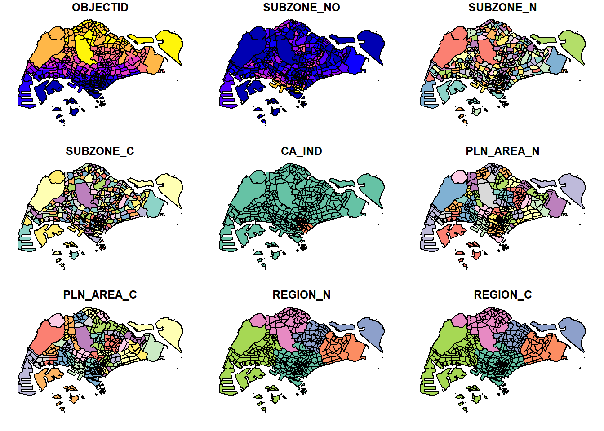
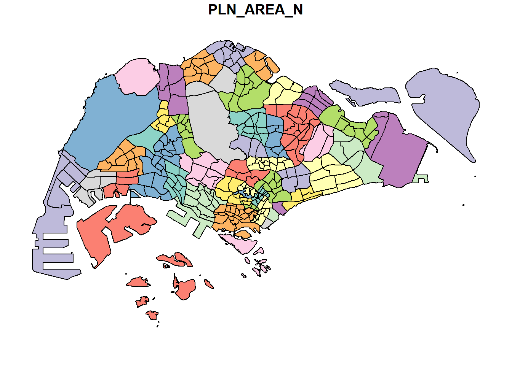

if (!require('pacman', character.only = T)){
install.packages('pacman')
}Loading required package: pacmanlibrary('pacman')Firstly, the code below will check if pacman has been installed. If it has not been installed, R will download and install it, before activating it for use during this session.
if (!require('pacman', character.only = T)){
install.packages('pacman')
}Loading required package: pacmanlibrary('pacman')Next, pacman assists us by helping us load R packages that we require, sf and tidyverse.
pacman::p_load(sf, tidyverse)For the purpose of this exercise, the following public datasets are used:
| Dataset Name | Source |
|---|---|
| Master Plan 2014 Subzone Boundary (Web) (MP14_SUBZONE_WEB_PL.shp) | data.gov.sg |
| Pre-Schools Location (preschools-location.kml) | data.gov.sg |
| Cycling Path (CyclingPathGazette.shp) | LTA Datamall |
| Latest version of Singapore Airbnb listing data (listings.csv) | Inside Airbnb |
The data has been extracted to Hands-on_Ex01/data/geospatial.
Master Plan and Cycling Path layers are provided in ES
RI shapefile format, Pre-Schools Location provided in kml and Airbnb listings in csv format.
There are two shapefile (.shp) datasets, Master Plan 2014 Subzone Boundary (Web) and Cycling Path.
Firstly, we will import Master Plan 2014 Subzone Boundary (Web). In the code below, dsn specifies the filepath where the dataset is located and layer provides the filename of the dataset excluding the file extension.
mpsz = st_read(dsn = "Hands-on_Ex01/data/geospatial", layer = "MP14_SUBZONE_WEB_PL")Reading layer `MP14_SUBZONE_WEB_PL' from data source
`C:\renjie-teo\IS415-GAA\exercises\Hands-on_Ex01\data\geospatial'
using driver `ESRI Shapefile'
Simple feature collection with 323 features and 15 fields
Geometry type: MULTIPOLYGON
Dimension: XY
Bounding box: xmin: 2667.538 ymin: 15748.72 xmax: 56396.44 ymax: 50256.33
Projected CRS: SVY21From the above message, it tells us that the dataset contains multipolygon features, containing 323 multipolygon features and 15 fields in the mpsz simple feature data frame and is in the svy21 projected coordinates system. The bounding box provides us the x and y extents (x min, x max, y min, y max) of the data.
Next, we will import Cycling Path.
cyclingpath = st_read(dsn = "Hands-on_Ex01/data/geospatial", layer = "CyclingPathGazette")Reading layer `CyclingPathGazette' from data source
`C:\renjie-teo\IS415-GAA\exercises\Hands-on_Ex01\data\geospatial'
using driver `ESRI Shapefile'
Simple feature collection with 2248 features and 2 fields
Geometry type: MULTILINESTRING
Dimension: XY
Bounding box: xmin: 11854.32 ymin: 28347.98 xmax: 42626.09 ymax: 48948.15
Projected CRS: SVY21From the above message, it tells us that the dataset contains mutlilinestring features, containing 2248 multilinestring features and 2 fields in the cyclingpath simple feature data frame and is in the svy21 projected coordinates system. Similarly, the bounding box provides us the x and y extents (x min, x max, y min, y max) of the data.
There is one kml dataset, Pre-Schools Location, that we have to import.
In the code below, we do not specify dsn and layer. Just the filepath and filename will suffice.
preschools = st_read("Hands-on_Ex01/data/geospatial/preschools-location.kml")Reading layer `PRESCHOOLS_LOCATION' from data source
`C:\renjie-teo\IS415-GAA\exercises\Hands-on_Ex01\data\geospatial\preschools-location.kml'
using driver `KML'
Simple feature collection with 1925 features and 2 fields
Geometry type: POINT
Dimension: XYZ
Bounding box: xmin: 103.6824 ymin: 1.247759 xmax: 103.9897 ymax: 1.462134
z_range: zmin: 0 zmax: 0
Geodetic CRS: WGS 84From the above message, it tells us that the dataset contains point features, containing 1359 features and 2 fields and is in the wgs84 projected coordinates system. Similarly, the bounding box provides us the x and y extents (x min, x max, y min, y max) of the data.
There are some methods to obtain information about a data frame quickly.
st_geometry(mpsz)Geometry set for 323 features
Geometry type: MULTIPOLYGON
Dimension: XY
Bounding box: xmin: 2667.538 ymin: 15748.72 xmax: 56396.44 ymax: 50256.33
Projected CRS: SVY21
First 5 geometries:MULTIPOLYGON (((31495.56 30140.01, 31980.96 296...MULTIPOLYGON (((29092.28 30021.89, 29119.64 300...MULTIPOLYGON (((29932.33 29879.12, 29947.32 298...MULTIPOLYGON (((27131.28 30059.73, 27088.33 297...MULTIPOLYGON (((26451.03 30396.46, 26440.47 303...st_geometry() can help us obtain summarised details about a dataset about the geometry. In the case on The information provided is the same as what we have seen while importing the datasets earlier on.
glimpse(mpsz)Rows: 323
Columns: 16
$ OBJECTID <int> 1, 2, 3, 4, 5, 6, 7, 8, 9, 10, 11, 12, 13, 14, 15, 16, 17, …
$ SUBZONE_NO <int> 1, 1, 3, 8, 3, 7, 9, 2, 13, 7, 12, 6, 1, 5, 1, 1, 3, 2, 2, …
$ SUBZONE_N <chr> "MARINA SOUTH", "PEARL'S HILL", "BOAT QUAY", "HENDERSON HIL…
$ SUBZONE_C <chr> "MSSZ01", "OTSZ01", "SRSZ03", "BMSZ08", "BMSZ03", "BMSZ07",…
$ CA_IND <chr> "Y", "Y", "Y", "N", "N", "N", "N", "Y", "N", "N", "N", "N",…
$ PLN_AREA_N <chr> "MARINA SOUTH", "OUTRAM", "SINGAPORE RIVER", "BUKIT MERAH",…
$ PLN_AREA_C <chr> "MS", "OT", "SR", "BM", "BM", "BM", "BM", "SR", "QT", "QT",…
$ REGION_N <chr> "CENTRAL REGION", "CENTRAL REGION", "CENTRAL REGION", "CENT…
$ REGION_C <chr> "CR", "CR", "CR", "CR", "CR", "CR", "CR", "CR", "CR", "CR",…
$ INC_CRC <chr> "5ED7EB253F99252E", "8C7149B9EB32EEFC", "C35FEFF02B13E0E5",…
$ FMEL_UPD_D <date> 2014-12-05, 2014-12-05, 2014-12-05, 2014-12-05, 2014-12-05…
$ X_ADDR <dbl> 31595.84, 28679.06, 29654.96, 26782.83, 26201.96, 25358.82,…
$ Y_ADDR <dbl> 29220.19, 29782.05, 29974.66, 29933.77, 30005.70, 29991.38,…
$ SHAPE_Leng <dbl> 5267.381, 3506.107, 1740.926, 3313.625, 2825.594, 4428.913,…
$ SHAPE_Area <dbl> 1630379.27, 559816.25, 160807.50, 595428.89, 387429.44, 103…
$ geometry <MULTIPOLYGON [m]> MULTIPOLYGON (((31495.56 30..., MULTIPOLYGON (…glimpse() can help us investigate what are the specific fields, its associated field data type and some sample data from the dataset to help us visualize the structure of the data.
head(mpsz, n=5)Simple feature collection with 5 features and 15 fields
Geometry type: MULTIPOLYGON
Dimension: XY
Bounding box: xmin: 25867.68 ymin: 28369.47 xmax: 32362.39 ymax: 30435.54
Projected CRS: SVY21
OBJECTID SUBZONE_NO SUBZONE_N SUBZONE_C CA_IND PLN_AREA_N
1 1 1 MARINA SOUTH MSSZ01 Y MARINA SOUTH
2 2 1 PEARL'S HILL OTSZ01 Y OUTRAM
3 3 3 BOAT QUAY SRSZ03 Y SINGAPORE RIVER
4 4 8 HENDERSON HILL BMSZ08 N BUKIT MERAH
5 5 3 REDHILL BMSZ03 N BUKIT MERAH
PLN_AREA_C REGION_N REGION_C INC_CRC FMEL_UPD_D X_ADDR
1 MS CENTRAL REGION CR 5ED7EB253F99252E 2014-12-05 31595.84
2 OT CENTRAL REGION CR 8C7149B9EB32EEFC 2014-12-05 28679.06
3 SR CENTRAL REGION CR C35FEFF02B13E0E5 2014-12-05 29654.96
4 BM CENTRAL REGION CR 3775D82C5DDBEFBD 2014-12-05 26782.83
5 BM CENTRAL REGION CR 85D9ABEF0A40678F 2014-12-05 26201.96
Y_ADDR SHAPE_Leng SHAPE_Area geometry
1 29220.19 5267.381 1630379.3 MULTIPOLYGON (((31495.56 30...
2 29782.05 3506.107 559816.2 MULTIPOLYGON (((29092.28 30...
3 29974.66 1740.926 160807.5 MULTIPOLYGON (((29932.33 29...
4 29933.77 3313.625 595428.9 MULTIPOLYGON (((27131.28 30...
5 30005.70 2825.594 387429.4 MULTIPOLYGON (((26451.03 30...head() can also help us obtain summarised details about a dataset as with glimpse(). Using the n=5 parameter inside function head, we are able to limit the amount of features to be shown to 5.
There are various methods to plot geospatial features into a graphical format, other than just looking at feature information.
The following code will plot multiple attributes within the dataframe up to a reasonable limit.
plot(mpsz)Warning: plotting the first 9 out of 15 attributes; use max.plot = 15 to plot
all
Recall st_geometry from Checking Content of a Simple Data Frame from earlier? st_geometry provides the geometry of the map, where we could use plot to plot just the geomtry of the data frame.
plot(st_geometry(mpsz))
We could also choose to plot a specific attribute of the data frame. The following code below will plot the PLN_AREA_N attribute.
plot(mpsz["PLN_AREA_N"])
To perform geoprocessing with two or more geospatial datasets, we need to ensure the datasets ar eprojected using a similar coordinate system.
Here, we will project a simple feature dataframe from one coordinate system to another.
The coordinate system in the dataset could be wrongly assigned during the importing process or missing (missing .proj file for ESRI shapefile) when importing geospatial data into R.
To check the coordinate system of a dataset, the st_crs() function of sf package could be used. Here, we check the coordinate system of mpsz simple feature data frame.
st_crs(mpsz)Coordinate Reference System:
User input: SVY21
wkt:
PROJCRS["SVY21",
BASEGEOGCRS["SVY21[WGS84]",
DATUM["World Geodetic System 1984",
ELLIPSOID["WGS 84",6378137,298.257223563,
LENGTHUNIT["metre",1]],
ID["EPSG",6326]],
PRIMEM["Greenwich",0,
ANGLEUNIT["Degree",0.0174532925199433]]],
CONVERSION["unnamed",
METHOD["Transverse Mercator",
ID["EPSG",9807]],
PARAMETER["Latitude of natural origin",1.36666666666667,
ANGLEUNIT["Degree",0.0174532925199433],
ID["EPSG",8801]],
PARAMETER["Longitude of natural origin",103.833333333333,
ANGLEUNIT["Degree",0.0174532925199433],
ID["EPSG",8802]],
PARAMETER["Scale factor at natural origin",1,
SCALEUNIT["unity",1],
ID["EPSG",8805]],
PARAMETER["False easting",28001.642,
LENGTHUNIT["metre",1],
ID["EPSG",8806]],
PARAMETER["False northing",38744.572,
LENGTHUNIT["metre",1],
ID["EPSG",8807]]],
CS[Cartesian,2],
AXIS["(E)",east,
ORDER[1],
LENGTHUNIT["metre",1,
ID["EPSG",9001]]],
AXIS["(N)",north,
ORDER[2],
LENGTHUNIT["metre",1,
ID["EPSG",9001]]]]Although the data frame has been projected in SVY21, if we look at the end of the output, it indicates that the EPSG is 9001 which is incorrect. The correct EPSG code for SVY21 should be 3414.
In the code chunk below, we will correct the crs to EPSG 3414.
mpsz3414 <- st_set_crs(mpsz,3414)Warning: st_crs<- : replacing crs does not reproject data; use st_transform for
thatNow, let us check the crs if it has been updated.
st_crs(mpsz3414)Coordinate Reference System:
User input: EPSG:3414
wkt:
PROJCRS["SVY21 / Singapore TM",
BASEGEOGCRS["SVY21",
DATUM["SVY21",
ELLIPSOID["WGS 84",6378137,298.257223563,
LENGTHUNIT["metre",1]]],
PRIMEM["Greenwich",0,
ANGLEUNIT["degree",0.0174532925199433]],
ID["EPSG",4757]],
CONVERSION["Singapore Transverse Mercator",
METHOD["Transverse Mercator",
ID["EPSG",9807]],
PARAMETER["Latitude of natural origin",1.36666666666667,
ANGLEUNIT["degree",0.0174532925199433],
ID["EPSG",8801]],
PARAMETER["Longitude of natural origin",103.833333333333,
ANGLEUNIT["degree",0.0174532925199433],
ID["EPSG",8802]],
PARAMETER["Scale factor at natural origin",1,
SCALEUNIT["unity",1],
ID["EPSG",8805]],
PARAMETER["False easting",28001.642,
LENGTHUNIT["metre",1],
ID["EPSG",8806]],
PARAMETER["False northing",38744.572,
LENGTHUNIT["metre",1],
ID["EPSG",8807]]],
CS[Cartesian,2],
AXIS["northing (N)",north,
ORDER[1],
LENGTHUNIT["metre",1]],
AXIS["easting (E)",east,
ORDER[2],
LENGTHUNIT["metre",1]],
USAGE[
SCOPE["Cadastre, engineering survey, topographic mapping."],
AREA["Singapore - onshore and offshore."],
BBOX[1.13,103.59,1.47,104.07]],
ID["EPSG",3414]]Now, the EPSG has been updated to 3414.
It is important in geospatial analytics to ensure that datasets are converted to projected coordinate system from the geographic coordinate system. Geographic coordinate system is not appropriate if analysis requires distance and/or area measurements.
Coordinate Reference System:
User input: WGS 84
wkt:
GEOGCRS["WGS 84",
DATUM["World Geodetic System 1984",
ELLIPSOID["WGS 84",6378137,298.257223563,
LENGTHUNIT["metre",1]]],
PRIMEM["Greenwich",0,
ANGLEUNIT["degree",0.0174532925199433]],
CS[ellipsoidal,2],
AXIS["geodetic latitude (Lat)",north,
ORDER[1],
ANGLEUNIT["degree",0.0174532925199433]],
AXIS["geodetic longitude (Lon)",east,
ORDER[2],
ANGLEUNIT["degree",0.0174532925199433]],
ID["EPSG",4326]]In the preschools data frame, it is in the wgs84 coordinate system.
Since reprojection is necessary from wgs84 to svy21 mathematically, st_set_crs() would not be appropriate. We will utilise st_transform().
In the example below, we reproject the preschools dataframe to svy21 (EPSG 3414).
preschools3414 <- st_transform(preschools, crs = 3414)Let’s see the content of the reprojected preschools3414 dataframe.
Coordinate Reference System:
User input: EPSG:3414
wkt:
PROJCRS["SVY21 / Singapore TM",
BASEGEOGCRS["SVY21",
DATUM["SVY21",
ELLIPSOID["WGS 84",6378137,298.257223563,
LENGTHUNIT["metre",1]]],
PRIMEM["Greenwich",0,
ANGLEUNIT["degree",0.0174532925199433]],
ID["EPSG",4757]],
CONVERSION["Singapore Transverse Mercator",
METHOD["Transverse Mercator",
ID["EPSG",9807]],
PARAMETER["Latitude of natural origin",1.36666666666667,
ANGLEUNIT["degree",0.0174532925199433],
ID["EPSG",8801]],
PARAMETER["Longitude of natural origin",103.833333333333,
ANGLEUNIT["degree",0.0174532925199433],
ID["EPSG",8802]],
PARAMETER["Scale factor at natural origin",1,
SCALEUNIT["unity",1],
ID["EPSG",8805]],
PARAMETER["False easting",28001.642,
LENGTHUNIT["metre",1],
ID["EPSG",8806]],
PARAMETER["False northing",38744.572,
LENGTHUNIT["metre",1],
ID["EPSG",8807]]],
CS[Cartesian,2],
AXIS["northing (N)",north,
ORDER[1],
LENGTHUNIT["metre",1]],
AXIS["easting (E)",east,
ORDER[2],
LENGTHUNIT["metre",1]],
USAGE[
SCOPE["Cadastre, engineering survey, topographic mapping."],
AREA["Singapore - onshore and offshore."],
BBOX[1.13,103.59,1.47,104.07]],
ID["EPSG",3414]]Now, the data frame is in svy21 coordinate system.
Sometimes, data do not come in geospatial data format, such as listing of Inside Airbnb. These are called data aspatial data, where it is not geospatial data, but contains x and y coordinates within its fields.
Since listings data set is in csv format, we will used read_csv() of readr package to import listing.csv and output it to an R object called listings, which is a tibble data frame.
listings <- read_csv("Hands-on_Ex01/data/aspatial/listings.csv")Rows: 4161 Columns: 18
── Column specification ────────────────────────────────────────────────────────
Delimiter: ","
chr (6): name, host_name, neighbourhood_group, neighbourhood, room_type, l...
dbl (11): id, host_id, latitude, longitude, price, minimum_nights, number_o...
date (1): last_review
ℹ Use `spec()` to retrieve the full column specification for this data.
ℹ Specify the column types or set `show_col_types = FALSE` to quiet this message.Instead of using glimpse() as shown earlier, list() could also do the job.
list(listings)[[1]]
# A tibble: 4,161 × 18
id name host_id host_…¹ neigh…² neigh…³ latit…⁴ longi…⁵ room_…⁶ price
<dbl> <chr> <dbl> <chr> <chr> <chr> <dbl> <dbl> <chr> <dbl>
1 50646 Pleasan… 227796 Sujatha Centra… Bukit … 1.33 104. Privat… 80
2 71609 Ensuite… 367042 Belinda East R… Tampin… 1.35 104. Privat… 145
3 71896 B&B Ro… 367042 Belinda East R… Tampin… 1.35 104. Privat… 85
4 71903 Room 2-… 367042 Belinda East R… Tampin… 1.35 104. Privat… 85
5 275344 15 mins… 1439258 Kay Centra… Bukit … 1.29 104. Privat… 49
6 289234 Booking… 367042 Belinda East R… Tampin… 1.34 104. Privat… 184
7 294281 5 mins … 1521514 Elizab… Centra… Newton 1.31 104. Privat… 79
8 324945 Cozy Bl… 1439258 Kay Centra… Bukit … 1.29 104. Privat… 49
9 330089 Cozy Bl… 1439258 Kay Centra… Bukit … 1.29 104. Privat… 55
10 330095 10 mins… 1439258 Kay Centra… Bukit … 1.29 104. Privat… 55
# … with 4,151 more rows, 8 more variables: minimum_nights <dbl>,
# number_of_reviews <dbl>, last_review <date>, reviews_per_month <dbl>,
# calculated_host_listings_count <dbl>, availability_365 <dbl>,
# number_of_reviews_ltm <dbl>, license <chr>, and abbreviated variable names
# ¹host_name, ²neighbourhood_group, ³neighbourhood, ⁴latitude, ⁵longitude,
# ⁶room_typeOur output shows our listing tibble data frame consists of 4161 rows and 18 columns. The useful fields we would be paying attention to is the latitude and longitude columns, which are in the decimal degree format. By assumption, we assume the data is in wgs84 Geographic Coordinate System.
The code below converts the listings tibble data fame into a simple feature data frame by using st_as_sf() from sf packages, which converts foreign data formats to an sf object.
listings_sf <- st_as_sf(listings,
coords = c("longitude", "latitude"),
crs = 4326) %>%
st_transform(crs = 3414)The arguments for
listings could be any other foreign data frame to be converted
coords requires to provide column name of x-coordinates followed by y-coordinates. The coordinates system also needs to be provided in terms of EPSG format. EPSG:4326 is the wgs84 Geographic Coordinate System whereas EPSG:3414 is Singapore’s svy21 Projected Coordinate System.
%>% nest st_transform() into the st_as_sf() function to convert into svy21 coordinates
glimpse(listings_sf)Rows: 4,161
Columns: 17
$ id <dbl> 50646, 71609, 71896, 71903, 275344, 289…
$ name <chr> "Pleasant Room along Bukit Timah", "Ens…
$ host_id <dbl> 227796, 367042, 367042, 367042, 1439258…
$ host_name <chr> "Sujatha", "Belinda", "Belinda", "Belin…
$ neighbourhood_group <chr> "Central Region", "East Region", "East …
$ neighbourhood <chr> "Bukit Timah", "Tampines", "Tampines", …
$ room_type <chr> "Private room", "Private room", "Privat…
$ price <dbl> 80, 145, 85, 85, 49, 184, 79, 49, 55, 5…
$ minimum_nights <dbl> 92, 92, 92, 92, 60, 92, 92, 60, 60, 60,…
$ number_of_reviews <dbl> 18, 20, 24, 47, 14, 12, 133, 17, 12, 3,…
$ last_review <date> 2014-12-26, 2020-01-17, 2019-10-13, 20…
$ reviews_per_month <dbl> 0.18, 0.15, 0.18, 0.34, 0.11, 0.10, 1.0…
$ calculated_host_listings_count <dbl> 1, 6, 6, 6, 44, 6, 7, 44, 44, 44, 6, 7,…
$ availability_365 <dbl> 365, 340, 265, 365, 296, 285, 365, 181,…
$ number_of_reviews_ltm <dbl> 0, 0, 0, 0, 1, 0, 0, 3, 2, 0, 1, 0, 0, …
$ license <chr> NA, NA, NA, NA, "S0399", NA, NA, "S0399…
$ geometry <POINT [m]> POINT (22646.02 35167.9), POINT (…Previously, there were 18 columns in the aspatial data, only 17 columns exists now. Longitude and Latitude columns were dropped and a new column has been created for geometry.
Besides providing functions to handle (import, export, projection, etc.) geospatial data, sf package can also perform geoprocessing (also known as GIS analysis functions).
Firstly, we utilise st_buffer() of sf package to compute the 5-metre buffers around cycling paths.
buffer_cycling <- st_buffer(cyclingpath,
dist = 5,
nQuadSegs = 30)What nQuadSegs alters is the generalisation of points to create the buffer. More segments means it is less generalised and less segments means more generalised buffers.
Next, we calculate the area of the buffers.
buffer_cycling$AREA <- st_area(buffer_cycling)Now, we can sum the area to get total land required for the buffer.
sum(buffer_cycling$AREA)1556978 [m^2]Firstly, we utilise st_intersects() of sf package to find which pre-schools falls under which planning subzone. Then, using lengths, we calculate the number of pre-schools within each planning subzone.
mpsz3414$`PreSch Count` <- lengths(st_intersects(mpsz3414, preschools3414))We could use summary() to viewsummary statistics of the newly derived PreSch Count field.
summary(mpsz3414$`PreSch Count`) Min. 1st Qu. Median Mean 3rd Qu. Max.
0.00 0.00 3.00 5.96 9.00 58.00 Wow! Here, we can see that there is at least one planning subzone with 58 pre-schools, with a mean of 5.96 pre-schools in each subzone.
Now, let’s look at the top sub-zone with the most pre-schools.
The code below utilises top_n of dplyr package to look in the mpsz3414 dataframe, under the field PreSch Count for the top record
top_n(mpsz3414, 1, `PreSch Count`)Simple feature collection with 1 feature and 16 fields
Geometry type: MULTIPOLYGON
Dimension: XY
Bounding box: xmin: 39655.33 ymin: 35966 xmax: 42940.57 ymax: 38622.37
Projected CRS: SVY21 / Singapore TM
OBJECTID SUBZONE_NO SUBZONE_N SUBZONE_C CA_IND PLN_AREA_N PLN_AREA_C
1 189 2 TAMPINES EAST TMSZ02 N TAMPINES TM
REGION_N REGION_C INC_CRC FMEL_UPD_D X_ADDR Y_ADDR SHAPE_Leng
1 EAST REGION ER 21658EAAF84F4D8D 2014-12-05 41122.55 37392.39 10180.62
SHAPE_Area geometry PreSch Count
1 4339824 MULTIPOLYGON (((42196.76 38... 58Here, we can see that the top planning subzone with the most preschools is Tampines East.
First, the formula for density is density = count / area
We will first calculate the area of each subzone below:
mpsz3414$Area <- mpsz3414 %>%
st_area()Next, we will use mutate() of dplyr package to compute density. We multiply it by 1000000 to reduce the amount of decimal points by converting it to km2 for easier handling.
mpsz3414 <- mpsz3414 %>%
mutate(`PreSch Density` = `PreSch Count`/Area * 1000000)Now, we can view the density of preschools.
list(mpsz3414$`PreSch Density`)[[1]]
Units: [1/m^2]
[1] 0.00000000 8.93150215 0.00000000 6.71784674 5.16223032 9.70516876
[7] 7.24989604 6.89216325 5.53101261 1.58316954 3.28434449 6.80952137
[13] 0.00000000 2.54735962 11.84392175 0.00000000 0.00000000 0.00000000
[19] 0.00000000 0.40657576 0.00000000 9.68631056 0.00000000 1.48058527
[25] 10.83710054 15.70722567 35.60169297 5.47445116 6.18629982 8.20434375
[31] 0.00000000 0.00000000 9.03949026 0.00000000 7.28645544 17.02931505
[37] 25.35629701 15.89256712 0.00000000 11.15753677 0.00000000 8.55218466
[43] 3.81906935 0.00000000 3.38235947 0.00000000 14.99604968 1.40732345
[49] 8.01406205 0.00000000 0.56949216 5.86952041 3.03547315 11.71891220
[55] 8.14148847 0.00000000 4.50504548 3.56920079 9.33487616 0.00000000
[61] 5.62143826 0.00000000 3.14611804 9.93599725 17.95935646 0.00000000
[67] 5.36153142 1.23223830 5.83558926 3.22047037 1.44233198 3.07398190
[73] 2.21008233 5.73475293 0.00000000 0.00000000 1.82176954 9.49222530
[79] 0.00000000 0.00000000 2.97422984 0.00000000 8.68525951 1.83998165
[85] 7.18639790 0.00000000 0.00000000 5.36902632 0.00000000 2.38539919
[91] 4.15173953 1.17625763 0.00000000 0.00000000 3.71428866 0.00000000
[97] 0.00000000 10.30968514 0.00000000 3.52586966 6.81950547 0.00000000
[103] 11.20672769 0.00000000 4.07884557 2.10935105 1.51390154 7.67355379
[109] 10.89459084 9.34277714 0.00000000 0.00000000 5.19103594 10.30880422
[115] 0.00000000 4.91199399 8.37774399 13.90186364 13.05635620 4.03408588
[121] 4.68205034 0.00000000 0.00000000 0.00000000 10.30828105 6.59711016
[127] 8.54111363 0.00000000 0.00000000 9.35774736 3.91277524 9.73248928
[133] 9.52960696 4.07004471 9.01512182 0.88420004 5.85700658 9.21924053
[139] 9.38756233 0.00000000 7.29210328 14.33152883 0.95320866 0.00000000
[145] 1.22943315 14.14811689 0.00000000 4.82029416 4.96423679 10.81358754
[151] 3.87478236 16.37550727 4.20286113 1.92511630 0.00000000 2.27575881
[157] 3.78370366 0.00000000 4.54910663 9.37229330 11.20468789 0.00000000
[163] 10.13730087 1.38998948 11.13208882 0.00000000 6.28324782 12.10849477
[169] 1.46373505 5.42827717 2.50973772 11.03366227 10.52072865 9.49878064
[175] 11.24580300 11.12890128 13.93950764 0.00000000 0.00000000 10.35889471
[181] 6.12997351 8.63257212 6.52702292 0.00000000 6.45113675 8.65521161
[187] 2.02537466 0.96587505 13.36459686 4.45419682 0.00000000 3.86526962
[193] 12.69090170 5.93156946 1.62615585 2.07322060 7.12358161 8.11313906
[199] 9.67642203 12.64374315 0.00000000 13.05378261 0.00000000 10.91908952
[205] 4.47169158 10.97443928 15.73682882 10.53521767 0.00000000 7.86180592
[211] 7.94696181 4.61489164 1.02119062 6.11811051 15.06832167 11.36765405
[217] 7.09104861 10.31880873 11.98092893 5.46797281 0.00000000 16.45587097
[223] 6.40125464 14.81499038 4.29058729 6.40314089 2.68546919 8.79682941
[229] 0.47286030 2.09945890 11.21716914 3.17460839 4.01850845 0.00000000
[235] 0.00000000 4.14472875 11.63901574 16.47133302 7.18459670 6.48975999
[241] 10.17545246 4.63093287 9.05523476 1.03085549 2.42737742 11.58770447
[247] 0.78643969 10.46342303 15.77874328 8.60077770 3.25580555 0.00000000
[253] 21.90726711 5.95439968 1.62661251 0.00000000 0.00000000 4.07046653
[259] 11.94152678 16.57069701 0.00000000 5.43686743 13.78099282 15.16440245
[265] 0.00000000 8.46092732 14.10108710 0.00000000 0.05698650 0.00000000
[271] 0.00000000 20.61136242 11.34007216 0.00000000 14.17732715 0.70978094
[277] 4.41176266 34.93133940 11.45820473 0.00000000 0.00000000 7.61420607
[283] 10.20733340 10.18622170 0.01433727 0.00000000 10.54179983 1.67883220
[289] 0.00000000 18.40637075 23.89765810 0.78045947 9.23332461 0.00000000
[295] 0.00000000 7.13352271 0.00000000 0.00000000 0.00000000 7.16914906
[301] 0.00000000 0.00000000 0.13820154 0.00000000 11.25082456 17.08643178
[307] 4.85251417 9.09591416 0.90530070 10.28168016 0.00000000 0.00000000
[313] 0.00000000 0.25535809 0.00000000 0.00000000 1.39575809 0.00000000
[319] 0.00000000 1.22409828 0.00000000 0.00000000 0.00000000Many geospatial analytics start with Exploratory Data Analysis. We will utilise ggplot2 functions to create graphs for EDA purposes.
We can plot a histogram to investigate the distrubtion of PreSch Density.
PreSch Densityhist(mpsz3414$`PreSch Density`)hist plots a histogram quickly from the data provided in PreSch Density. However it lacks customisation capabilities. We can customise it further to add appropriate labels using ggplot2.
PreSch Densityggplot(data=mpsz3414,
aes(x= as.numeric(`PreSch Density`))) +
geom_histogram(bins=20,
color="black",
fill="light blue") +
labs(title = "Are pre-schools even distributed in Singapore?",
subtitle = "There are many planning sub-zones with a single pre-school on the other hand, \n there are six planning-subzones with at least 20 pre-schools",
x = "Pre-school density (per km sq)",
y = "Frequency")ggplot(data=mpsz3414,
aes(x= as.numeric(`PreSch Density`), y = as.numeric(`PreSch Count`))) +
geom_point(color="black",
fill="light blue") +
xlim(0, 60) +
ylim(0, 60) +
labs(x = "Pre-school density (per km sq)",
y = "Pre-school count")Here, while the graph works without specifying xlim and ylim, we want to standardise the scales on x and y axes, hence, we specified the limits to be from 0 to 60 on both axes.